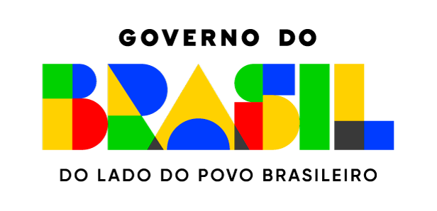

<footer class="tsiino-site-footer" aria-label="Rodapé do site Tsiino Hiiwiida">
  <div class="tsiino-footer-inner">

    <div class="tsiino-footer-logos">
      <a class="tsiino-footer-home" href="index.html" aria-label="Página inicial do Tsiino Hiiwiida">
        
      </a>

      <a href="https://www.amazoniamaisdez.org.br/" target="_blank" rel="noopener" aria-label="Iniciativa Amazônia+10">
        
      </a>

      <a href="https://confap.org.br/" target="_blank" rel="noopener" aria-label="CONFAP">
        
      </a>

      <a href="https://www.gov.br/cnpq/pt-br" target="_blank" rel="noopener" aria-label="CNPq">
        
      </a>
      
      <a href="https://www.gov.br/pt-br/" target="_blank" rel="noopener" aria-label="Governo Federal">
        
      </a>
    </div>

    <div class="tsiino-footer-contact">
      <div class="tsiino-footer-title">Contato</div>
      <a href="mailto:tsiinohiiwiida@gmail.com">tsiinohiiwiida@gmail.com</a>
    </div>

    <div class="tsiino-footer-dev">
      <div class="tsiino-footer-title">Website desenvolvido por</div>

      <div class="tsiino-footer-dev-links">
        <a href="https://github.com/giuliaottino" target="_blank" rel="noopener" aria-label="GitHub de G.C. Ottino">
          <i class="bi bi-github" aria-hidden="true"></i>
          <span>G.C. Ottino</span>
        </a>

        <a href="https://github.com/domingoscardoso" target="_blank" rel="noopener" aria-label="GitHub de D. Cardoso / dboslab">
          <i class="bi bi-github" aria-hidden="true"></i>
          <span>D. Cardoso</span>
        </a>
      </div>
    </div>

  </div>
</footer>

<script>
(function () {
  const PROJECT_BASE = "cabeca_cachorro";

  function getPathInsideSite() {
    let path = window.location.pathname;

    if (path.startsWith("/" + PROJECT_BASE + "/")) {
      path = path.replace("/" + PROJECT_BASE, "");
    }

    if (path === "" || path === "/") {
      path = "/index.html";
    }

    if (path.endsWith("/")) {
      path = path + "index.html";
    }

    return path;
  }

  function getRelativePrefix() {
    const path = getPathInsideSite();
    const parts = path.split("/").filter(Boolean);

    if (parts.length <= 1) {
      return "";
    }

    return "../".repeat(parts.length - 1);
  }

  function fixFooterPaths() {
    const footer = document.querySelector(".tsiino-site-footer");

    if (footer && footer.parentElement !== document.body) {
      document.body.appendChild(footer);
    }

    const prefix = getRelativePrefix();

    document.querySelectorAll(".tsiino-site-footer img[data-src]").forEach(function (img) {
      const src = img.getAttribute("data-src");

      if (!src) {
        return;
      }

      img.src = prefix + src.replace(/^\/+/, "");

      img.addEventListener("error", function () {
        img.classList.add("tsiino-footer-logo-missing");
      });
    });

    document.querySelectorAll(".tsiino-footer-home").forEach(function (link) {
      link.href = prefix + "index.html";
    });
  }

  if (document.readyState === "loading") {
    document.addEventListener("DOMContentLoaded", fixFooterPaths);
  } else {
    fixFooterPaths();
  }

  window.addEventListener("load", fixFooterPaths);
})();
</script>